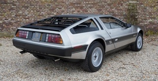

Selección de nuestros coches
Audi 100 - 1969
 BMW E23 - 1980
BMW E23 - 1980

Delorean DMC12 - 1982
 Fiat 124 - 1968
Fiat 124 - 1968
 Mustang GT - 1968
Mustang GT - 1968
Jaguar MK10 - 1966
Mercedes SL500 - 1982
 Mercedes 250SE - 1966
Mercedes 250SE - 1966
 Porsche 356 - 1962
Porsche 356 - 1962
 Seat 600 - 1970
Seat 600 - 1970